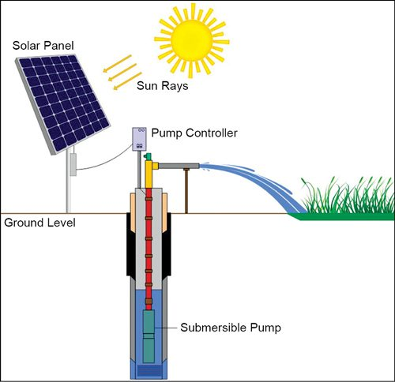
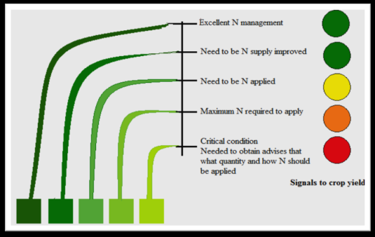
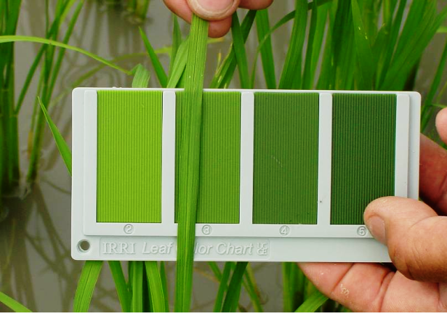

1. The Department of Agriculture released a guide map which shows areas that are best for growing rice in the Philippines. It lists everything, from area to water tables. The application is powered by Google Maps.
2. Solar-powered irrigation systems are developed to replace the traditional. The traditional calls for the help from a carabao, and it really takes time to create proper irrigation. With the solar-powered irrigation system, it can be set up within 60 days and it will last longer. What’s better is that it also costs less in the long run. Instead of spending an average of P450, 000 per hectare, the government was able to cut the spending down to P150, 000.
3. The Leaf Color Chart (LCC) allows farmers to know how much fertilizer a crop of rice needs based on its leaf color. The chart has four green panels. The farmers can compare the color of their sample to the panels. The chart readily recommends the amount of fertilizer needed. This technology was originally printed on paper, but now it’s more accessible as an app.
4. Hybrid seeds of corn are now used in the Caraga region. They are called F1 hybrid seeds. The seeds raise the average yield of corn.
References:
Dummy Reference Academy
The World Wide Surfing Internet